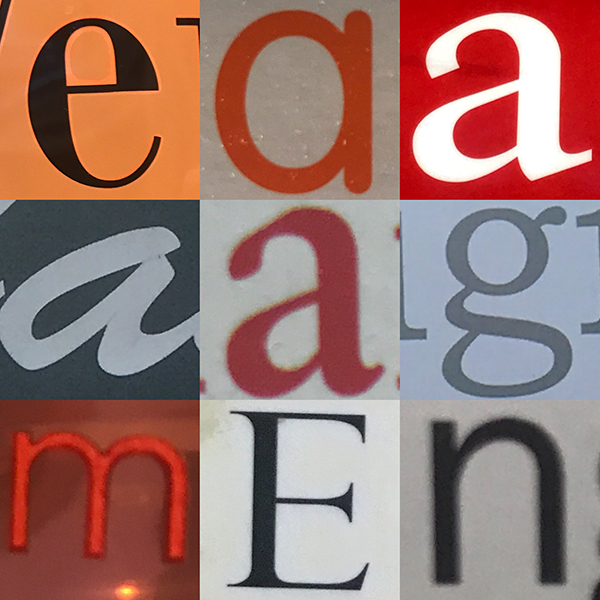
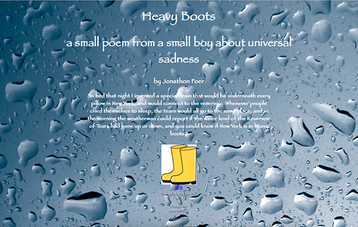
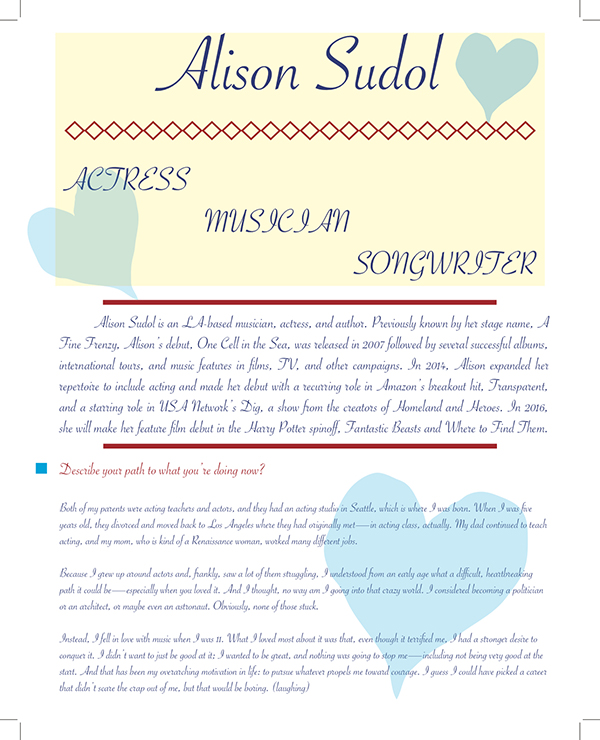
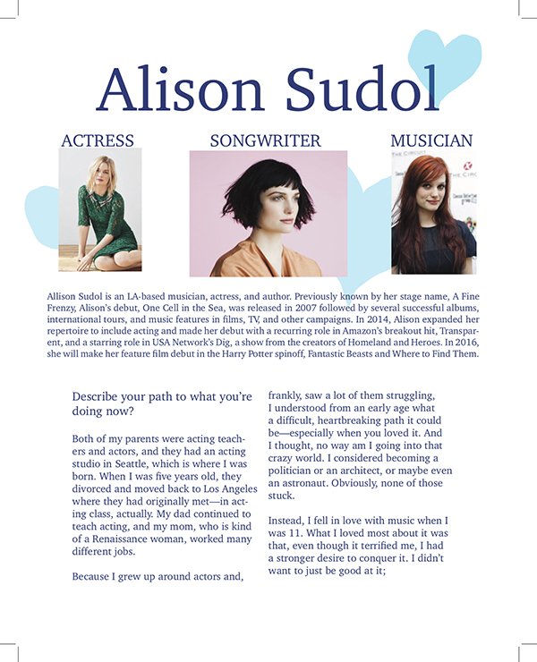
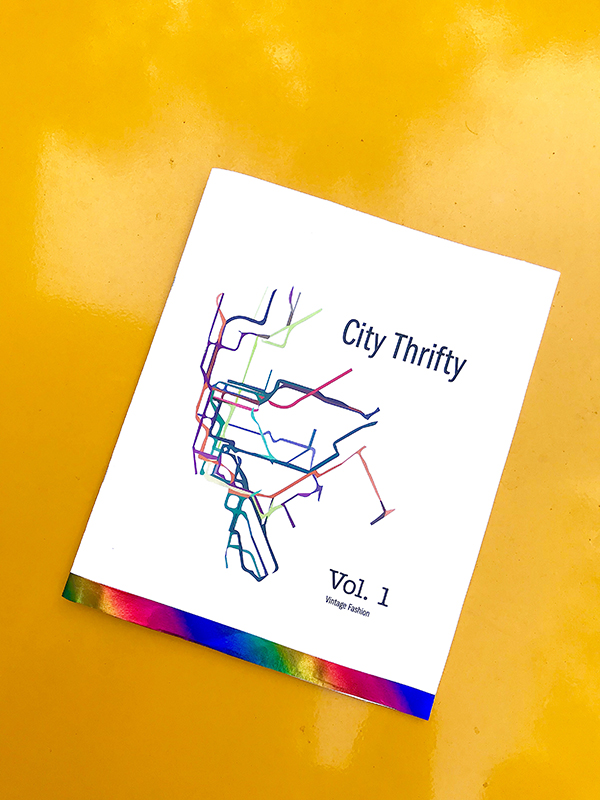
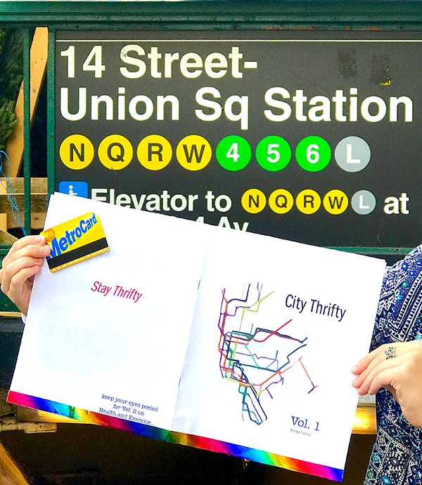
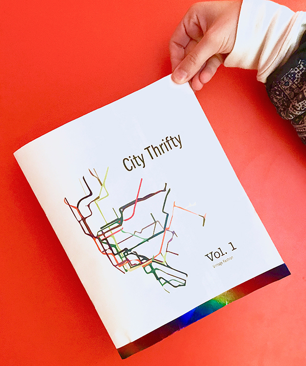
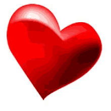

Design for Journalists I was a special class that incorporates journalism/writing techniques with technological/graphic layout. Through a multitude of different assignments, we covered all facets of design with adobe programs, fonts, layouts, colors, graphic design and many other aspects that go into creating a visually pleasing document - this extended to web and also print form. Very grateful for all the new knowledge!
I ventured outside into the streets and shops of New York City in search for different types of typography ranging from
The next step is to take your images of each font and create a quiz for classmates to classify each letter into a typeface.
here is my finished grid.
I did not realize how many different types and variations of certain fonts there were. Some fonts vary so slightly from one another it is hard to differentiate which category they belong in. I also understood that some fonts, most actually, are a mixture of two! It is eyeopening also that certain fonts denote certain things subtly, like most magazines and restaurant menus use sans serif for easy readability and script is used for higher end shop signs. Taking other people's quizzes definitely solidified my grasp on the differences between each font family.
I found a quotation that was inspiring or important to me and presented the quote in a website layout for the first time. I had to use brackets and create an HTML document with a matching STYLE page. The page needed a header, a lede that introduces the quote, the quote itself, and an attribute. The end of the page layout required other information like our name and source.
here is my finished web layout.
I was really proud of myself for being able to successfully code my own page layout through Brackets. Changing the background, adding images, and creating a clickable attribute was very cool and something I never thought I would be able to do.
I chose an interview from the many options on The Great Discontent and scraped the text from the interview and redesigned the web layout as an article for print. We used Adobe InDesign this time, not Brackets, since it was for a printed final product, not digital. We incorporated many parts of the article like title, byline, body text, captions, etc. But styled each element from the original article in a different layout more suited for printed work.
here is my article before...
here is my article after!
much cleaner! :)
This project really helped me see visual differences in graphic layouts and tangibly hold a product better suited for real life reading, and not through a screen. I learned a lot about not only the woman Alison Sudol who I chose, but also what is most appealing to a reader. It was in this project I really understood and appreciated the feedback and criticism from others and how necessary a new set of eyes on your work is. At first I was very jumbled with my article and it was received as potentially confusing to classmates because of all the elements, colors and fonts I used. Simplicity is key and it needs to be visually pleasing in order for people to want to read your printed work. We bound our final printed interview and shared it with the class!
I brainstormed many ideas for potential zine concepts and came to the very specific one of saving money in the city. We were using our knowledge from last assignment with InDesign, lengthened the project and then added a huge personal element not just in graphic aspects but all the content as well. I made it very personal and created many articles covering a variety of topics all relating back to being "thrifty in the city!" The zine needed a front page, letter from the editor, masthead, the articles themselves, and then a back page. We spent very long doing this project since it seemed most valuable.
here are a few snaps of my zine out in New York City...
  Again, my zine would not have been as successful as it turned out to be, without the comments from other classmates. I originally had so many ideas and themes and it was very jumbled like my pervious print assignment. I included a lot of clip art and cheesy images because I am somewhat cheesy myself. However when many people were confused again about the real direction of my zine, I was able to narrow down and cut out what I didn't need for my zine. I even graphically drew subway lines on InDesign to remove the pre-made art from internet and make it more personal. After many revisions and keeping in mind a typographic hierarchy for simplicity and easy reading, I had a finished product! In light of my zines concept of saving money, I spent as little as i could on printing and binding my zine. It looked very thrifty but still informative! I am very happy with my final product.
I am so lucky to have been last minute accepted into this design class! If I seriously see myself, which I do, going into some sort of field of journalism, I need to know about layout. The graphic design of whatever article, no matter the content, is the initial impression given to a reader. So in order for peers to actually want to read your work, you have to present it in a visually pleasing and aesthetic way. I have a strong grasp on what is "pleasing" and "readable" from all the different aspects Dylan taught us like font family, margin, font size, images and so much more! I have never been more proud when I was taking photos of my zine out in New York and a woman stopped me and asked what my magazine was about! And where I got one! I am smiling as I write this! I felt like a successful published journalist holding her first zine that caught the eye of a stranger!
